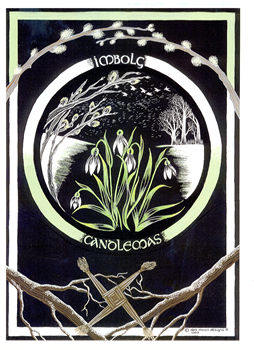
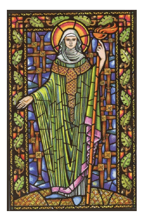
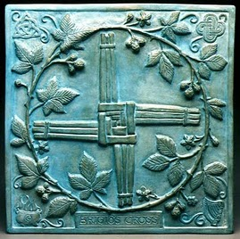

|
Imbolc, Oimelec, Brigantia, Bride, Candlemas, Candelaria

“Cando a Candelaria chora, medio inverno vai fora; e que chore ou que deixe de chorar, a metade do inverno está por pasar.”
“Si el día de la Candelaria es brillante y claro habrá dos inviernos en el año.”
(Dicho gallego)
Imbolc es uno de los cuatro Sabats mayores de la tradición pagana europea. Se celebra entre el uno y el tres de febrero, cuando Acuario está a 15 grados respecto del Sol. Los días son más largos y la primavera ya no queda tan lejos.
Los druidas se referían a esta fiesta con los nombres de Imbolc que significa “en el vientre” y Oimelec, “leche de oveja”. Los anglosajones la llamaban Candlemas y los escoceses Bride o Brigantia en honor de la diosa Brígida o Brigit.. En España la conocemos como la Candelaria, festividad cristiana del 2 de febrero con raíces paganas. La iglesia católica adaptó la fiesta pagana convirtiendo a la diosa Brigit en Santa Brígida, y más tarde, gracias a la devoción popular, la santa fue ascendida a Virgen, llevando el apelativo de Virgen de las candelas. La iglesia dedica este día a la consagración y bendición de las velas que serán usadas en el nuevo año litúrgico. En la tradición católico-cristiana se conmemora el día de la purificación de la Virgen María en el Templo y la presentación del Jesús niño ante Simeón y los sabios judíos.
En Irlanda, febrero era el mes dedicado a Brígida, también conocida como las Tres madres o las Tres Benditas Señoras de Bretaña. Nueve o diecinueve sacerdotisas mantenían encendida la llama del santuario de Kildare en su honor. El tres de febrero se celebraba Brigantia.
Había pozos relacionados con la diosa por todas las Islas Británicas. Los cuales tenían el poder de devolver la vista a los ciegos y sanar heridas imposibles. Era la diosa de los Brigantes, una tribu muy extendida.
Según la leyenda artúrica, esta fiesta tiene una conexión con los tiempos en los que los hombres celtas se reunían ante la roca en la que estaba clavada la espada que proclamaría al auténtico rey.

Brigit domina el fuego, la sabiduría y la inspiración. Es la patrona de los herreros, los artesanos, poetas, bardos, artistas, curanderos y sanadores. Por estas cualidades es representada de forma triple. Es también el poder de la luna nueva y de la primavera. Está relacionada con la agricultura y la fertilidad. Simboliza el fuego sagrado de la curación y el nacimiento, de la forja y la inspiración artística.
La Diosa se nos presenta bajo su aspecto de doncella. El Dios puede adquirir forma tanto de joven como de niño.
Antiguamente se encendían grandes hogueras de purificación en las colinas, hasta que a partir del siglo V las velas o candelas las reemplazaron. Otra costumbre típica era la de elaborar con paja la famosa cruz de Brígida para colgarla en la puerta y alejar así el mal del hogar.
Es el momento perfecto para elaborar velas artesanales y realizar rituales de purificación. La energía de la Candelaria favorece los asuntos morales relacionados con el perdón. Protege y potencia el trabajo intelectual y creativo personal.
Colores: amarillo, naranja, rojo,verde.
Perfumes: limón, azafrán, laurel, verbena, mirra.
Gemas: amatista, citrino, topacio, coral, rubí.
Dioses/as: Minerva, Atenea, Vesta, Brigid.
Alimentos: pan de sésamo, galletas de cereales, asado de cerdo o jabalí (los huesos se enterraban en el campo para garantizar la fertilidad de la tierra), leche.

|
 RSS
RSS